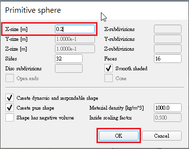
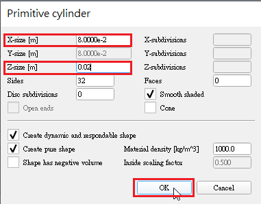
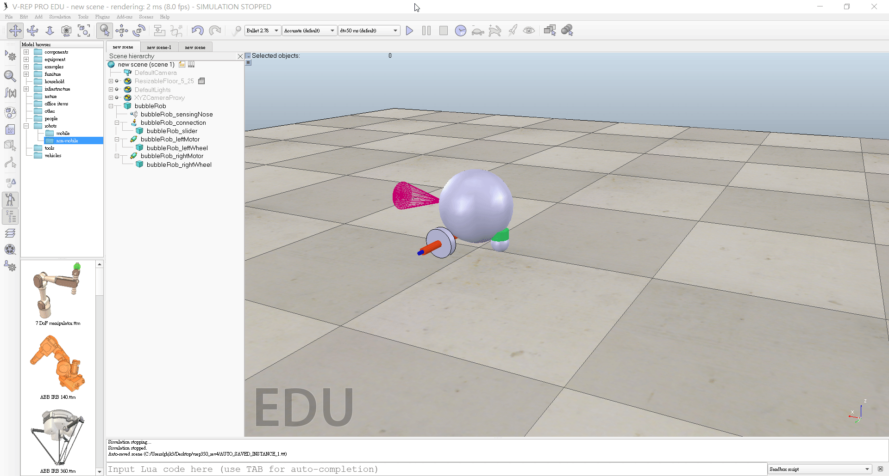
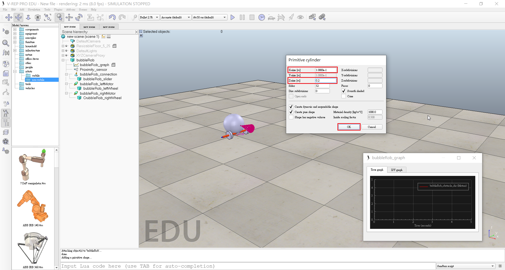
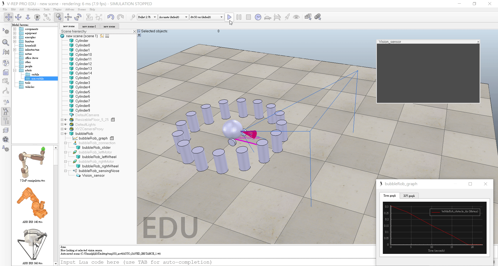

V-rep << Previous Next >> Experience-1
V-rep << Previous Next >> Experience-1
Tutorial

▲BubbleRob
BubbleRob
- Add a primitive sphere of diameter 0.2 to the scene with [Menu bar --> Add --> Primitive shape --> Sphere].
- Adjust the X-size item to 0.2, then click OK.
 - Start the simulation (<control-space>, and copy-and-paste the created sphere (with <control-c> then <control-v>).
- Enable Collidable , Measurable , Renderable and Detectable in the object common properties for that shape.
- Open the position dialog on the translation tab, select the sphere representing BubbleRob's body, and enter 0.02 for Along Z.
- Make sure that the Relative to-item is set to World. Then we click Translate selection.
- Edit sphere's name. We enter bubbleRob and press enter.

- Add a proximity sensor so that BubbleRob knows when it is approaching obstacles: we select [Menu bar --> Add --> Proximity sensor --> Cone type].
- In the orientation dialog on the Rotation tab, we enter 90 for Around Y and for Around Z, then click Rotate selection.
- In the position dialog, on the position tab, we enter 0.1 for X-coord. and 0.12 for Z-coord.
- Open its properties dialog.
- Click Show volume parameter to open the proximity sensor volume dialog.
- Adjust items Offset to 0.005, Angle to 30 and Range to 0.15.
- In the proximity sensor properties, we click Show detection parameters.
- Uncheck item Don't allow detections if distance smaller than then close that dialog again.
- Edit proximity sensor's name. We enter bubbleRob_sensingNose and press enter.
Select bubbleRob_sensingNose, then control-select bubbleRob, then click [Menu bar --> Edit --> Make last selected object parent]. - This is what we now have:

- Create a new scene with [Menu bar --> File --> New scene].
 - Enable Collidable, Measurable, Renderable and Detectable in the object common properties for that cylinder.

- Set the cylinder's absolute position to (0.05,0.1,0.04) and its absolute orientation to (-90,0,0).


- Change the name to bubbleRob_leftWheel.
- Copy and paste the wheel, and set the absolute Y coordinate of the copy to -0.1.
- We rename the copy to bubbleRob_rightWheel.
- Select the two wheels, copy them, then switch back to scene 1, then paste the wheels.
- Click [Menu bar --> Add --> Joint --> Revolute] to add a revolute joint to the scene.
- Keep the joint selected, then control-select bubbleRob_leftWheel.
- In the position dialog, on the position tab, we click the Apply to selection button.
-
In the orientation dialog, on the orientation tab, we do the same.
- Rename the joint to bubbleRob_leftMotor.
- Click Show dynamic parameters to open the joint dynamics properties dialog.
- Enable the motor, and check item Lock motor when target velocity is zero.
- Repeat the same procedure for the right motor and rename it to bubbleRob_rightMotor.
- Attach the left wheel to the left motor, the right wheel to the right motor, then attach the two motors to bubbleRob.
- This is what we have:
- In a new scene we and add a pure primitive sphere with diameter 0.05 and make the sphere Collidable, Measurable, Renderable and Detectable (if not already enabled), then rename it to bubbleRob_slider.
- Add a force sensor object with [Menu bar --> Add --> Force sensor].
- Rename it to bubbleRob_connection and shift it up by 0.05.
- Attach the slider to the force sensor, then copy both objects, switch back to scene 1 and paste them.
- Shift the force sensor by -0.07 along the absolute X-axis, then attach it to the robot body.
- If we run the simulation now, we can notice that the slider is slightly moving in relation to the robot body.
- In the shape dynamics properties, for bubbleRob_slider we set the local respondable mask to 00001111, and for bubbleRob, we set the local respondable mask to 11110000.
- If we run the simulation again, we can notice that both objects do not interfere anymore.
 - This is what we now have:
- Select the two wheels and the slider, and in the shape dynamics dialog we click three times M=M*2 (for selection).
- The effect is that all selected shapes will have their masses multiplied by 8.
- Do the same with the inertias of the 3 selected shapes.
- Run the simulation again.
- Set the Target velocity to 50 for both motors.
- We run the simulation: BubbleRob now moves forward and eventually falls off the floor.
- Reset the Target velocity item to zero for both motors.
- Click [Menu bar --> Tools --> Collections] to open the collection dialog.
- In the collection dialog, we click Add new collection.
- While the new collection item is selected in the list, select bubbleRob in the scene hierarchy, and then click Add in the collection dialog.
- To edit the collection name, we double-click it, and rename it to bubbleRob_collection.
- Open the distance dialog with [Menu bar --> Tools --> Calculation module properties].
- In the distance dialog, we click Add new distance object and select a distance pair: [collection] bubbleRob_collection - all other measurable objects in the scene.
- Rename the distance object to bubbleRob_distance with a double-click in its name.
- Click [Menu bar --> Add --> Graph] and rename it to bubbleRob_graph.
- Attach the graph to bubbleRob, and set the graph's absolute coordinates to (0,0,0.005).
- Open the graph properties dialog by double-clicking its icon in the scene hierarchy.
- Uncheck Display XYZ-planes, then click Add new data stream to record and select Object: absolute x-position for the Data stream type, and bubbleRob_graph for the Object / item to record.
- Also want to record the y and z positions: we add those data streams in a similar way as above.
- Click Add new data stream to record and select Distance: segment length for the Data stream type, and bubbleRob_distance for the Object / item to record.
- In the Data stream recording list, we now rename Data to bubbleRob_x_pos, Data0 to bubbleRob_y_pos, Data1 to bubbleRob_z_pos, and Data2 to bubbleRob_obstacle_dist.
- Select bubbleRob_x_pos in the Data Stream recording list and in the Time graph properties section, uncheck Visible. We do the same for bubbleRob_y_pos and bubbleRob_z_pos.
- Click Edit 3D curves to open the XY graph and 3D curve dialog, then click Add new curve.
- In the dialog that pops open, we select bubbleRob_x_pos for the X-value item, bubbleRob_y_pos for the Y-value item and bubbleRob_z_pos for the Z-value item.
- Rename the newly added curve from Curve to bubbleRob_path.
- Check the Relative to world item and set Curve width to 4.

- Set one motor target velocity to 50, run the simulation, and will see BubbleRob's trajectory displayed in the scene.
- Stop the simulation and reset the motor target velocity to zero.
- Add a pure primitive cylinder with following dimensions: (0.1, 0.1, 0.2).
 - Disable Body is dynamic in the shape dynamics properties.
- Want our cylinder to be Collidable, Measurable, Renderable and Detectable.
- The cylinder is still selected, we click the object translation toolbar button.
- Drag any point in the scene: the cylinder will follow the movement while always being constrained to Keep the same Z-coordinate.
- Copy and paste the cylinder a few times, and move them to positions around BubbleRob.
- Set a target velocity of 50 for the left motor and run the simulation: the graph view now displays the distance to the closest obstacle and the distance segment is visible in the scene too.
- Stop the simulation and reset the target velocity to zero.
- Check items Object is model base and Object/model can transfer or accept DNA in the object common properties.
- Select the two joints, the proximity sensor and the graph, then enable item Igonred by model bounding box and click Apply to selection.
- Disable camera visibility layer 2, and enable camera visibility layer 10 for the two joints and the force sensor: this effectively hides the two joints and the force sensor
- Select the vision sensor, the two wheels, the slider, and the graph, then enable item Select base of model instead.
- Click [Menu bar --> Add --> Vision sensor --> Perspective type].
- Set the local position and orientation of the vision sensor to (0,0,0).
- At the same position and orientation as BubbleRob's proximity sensor.
- Open its properties dialog.
- Set the Far clipping plane item to 1, and the Resolution x and Resolution y items to 256 and 256.
- Open the vision sensor filter dialog by clicking Show filter dialog.
- Select the filter component Edge detection on work image and click Add filter.
- Position the newly added filter in second position (one position up, using the up button).
- Double-click the newly added filter component and adjust its Threshold item to 0.2, then click OK.
- Added floating view, right-click [Popup menu --> View --> Associate view with selected vision sensor](make sure the vision sensor is selected during that process).
- Start the simulation, then stop it again.
 - Select bubbleRob and click [Menu bar --> Add --> Associated child script --> Non threaded].
- Double-click the little script icon that appeared next to bubbleRob's name in the scene hierarchy.
- Copy and paste following code into the script editor, then close it:
- Run the simulation. BubbleRob now moves forward while trying to avoid obstacles.
Building a clean model
V-rep << Previous Next >> Experience-1